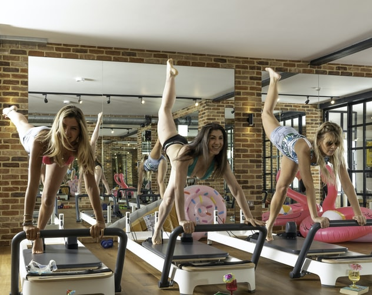

Welcome to The Fitness Site!
There are many things that contribute to fitness, one of the most important is consistency. Essentially, you want to put your body on a set schedule and stick to it. That means exercising daily and getting good recovery time and, more importantly, sleep. Routine is very conducive to getting the fitness results you want and need. Another thing that importantly must stay consistent is your diet, a proper diet is necessary to achieve the best results in fitness.
One excellent way to remain consistent in your exercise and diet is to keep a log. Logging your workouts and what weights you are using is a necessity for consistency. The same can be said for your diet. Your log should include your workouts with weigths and what you are eating and when. Your log also serves as a reminder of the progress you've made and where you are progressing to, which can serve as a much needed mental boost.
